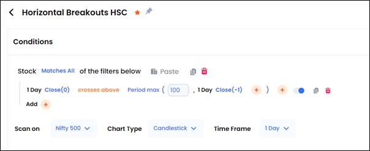
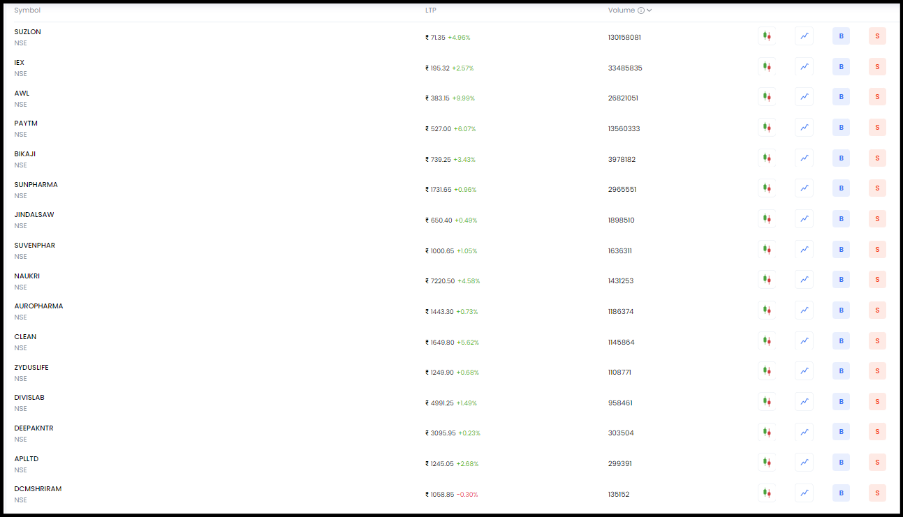
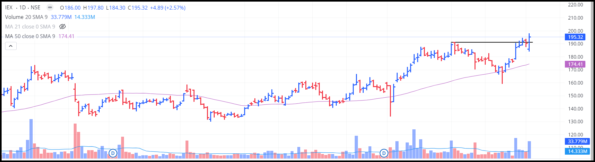
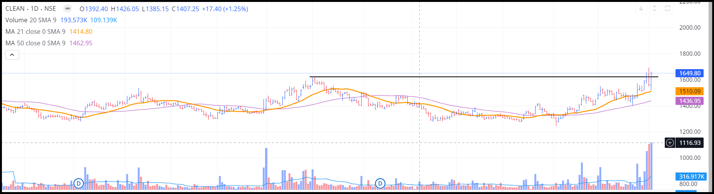
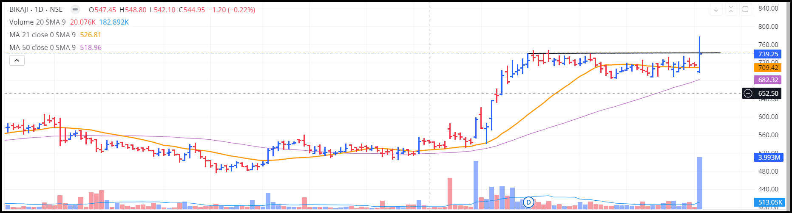
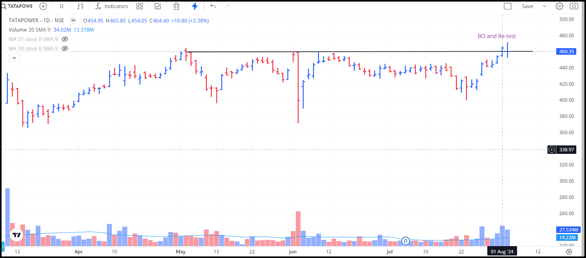

Targets, Screening and Retests - How to make sense of these?

The Horizontal Line Method of Swing Trading – Part 1 Recap
In our last blog, we delved into the basics of horizontal line breakout trading, a straightforward yet powerful strategy. We explored how breakouts occur when prices surpass significant resistance or support levels, signalling potential new trends. We focused on Long – Horizontal Breakouts to illustrate how this method can lead to substantial gains.
We also discussed the importance of having a systematic approach, especially in defining clear entry points and managing the tricky part of exits. We touched on the concept of fakeouts—those frustrating moments when the price appears to break out but then reverses, often due to lack of volume, or shifts in sentiment.
In this follow-up, we'll dive deeper into practical aspects, including how to identify stocks poised for breakouts, set target prices, and the importance of re-testing. Let's continue cracking the code of horizontal line breakout trading!
1. How to identify these stocks?
Believe me when I say this, I have spent a lot of time trying to figure this out. And I won’t bore you with what all I tried; I’ll just introduce you to the best solution I found to this problem.
Using Streak to find these stocks:
So, what is Streak? Streak is a technical analysis (TA) and algorithmic trading platform. And as much as I’ll like to write about all it’s features, that’s a story for another time. For now, we’re going to focus on a very specific feature in it, which is Screening. I typically am able to find A LOT of breakout stocks through this method.
That’s pretty much it, you only need this one filter to find the stocks, and the rest is your job.
I haven’t made this screen very rigid for a reason, which is that I rather go through 10 extra stocks than 10 less and miss out on anything worthy. This screen is available on Streak under the name ‘Horizontal Breakouts HSC’. Feel free to explore it, you can add volume filters, moving average filters, MACD filters and anything you want. I just like to keep it simple.
So, what next? This will give us a list of stocks and now it’s our job to go through each one of them and find what we want. Here’s a list of few stocks along with their charts that this filter returned as on 03/08/2024 (Saturday).
One important thing to note is that the previous day (Friday) wasn’t a very great day for the markets, with the NIFTY breaking over –1% and if anything, this scan depends on the overall market condition more than anything else.
But let’s be real, this happens all the time, and let’s see what some of these charts looked like in this scan.
  These are some of these, and you can see these are the types of stocks we want to filter out, the ones breaking out with huge volumes.
So, I think with the question of how to arrive at these stocks being out of the way, we can move on to the next question.
2. When to sell?
This is a particularly tricky question, but let’s move in a way the stock would. So, you’ve bought the stock at 3:15PM on the day it broke out and you’re pretty sure it would close above the line (as you bought it just before the market closes) and it also had good volumes.
The next day, two things can happen. The price can sustain above the resistance, which obviously is great for us. But what’s not so great is that what if it doesn’t?
Typically, you should keep your SL below the resistance line, between 2–5% and the let the stock decide whether it wants to be in your portfolio. If the SL is hit, well and good, we exit. And if it doesn’t, well you don’t do anything and it might not always be a very bad thing!
The Importance of Re-Testing
Alright, let's talk about re-testing—a super important part of breakout trading that often gets overlooked. So, you've spotted a breakout and maybe even jumped in, but then the price pulls back to the breakout level. This isn't always a bad thing; it's actually called a re-test. Basically, the price is checking if the old resistance level can now act as new support.
Why Does Re-Testing Happen?
- Taking Some Profits: After a breakout, some traders might take profits, causing a little pullback.
- Market Confirmation: The market wants to make sure the breakout is legit. If the price holds above the breakout level, it's a good sign that the new trend might stick around.
- A Quick Pause: Sometimes, the market just needs a moment to catch its breath and double-check the breakout’s strength.
Re-testing can give you a second chance to get in on a trade with a bit more confidence. It's like the market's way of saying, "Yep, we're good to go!" So, don’t sweat it if you see a pullback after a breakout; it might just be setting up for an even bigger move.
This is the closing on 02-08-2024, as you can see, the stock broke out on 1st Aug, and actually closed lower than that closing on 2nd Aug, and this is a re-test. You cannot predict till when will the stock hover around that level and obviously, it isn’t good if it just doesn’t move up, but it’s important for you to know that this is common and if you see a slight -ve return on your stock the next day after buying it, don’t be nervous, it’s pretty normal.
Now let’s say the stock moves up after re-testing the level, so when do you sell? In the case of horizontal break outs, you trail your stop loss. You do not sell the stock at any particular time, you can exit by moving the SL up till the stocks hit it or you sell it in case there is a huge upside move and you want to book your profits and have some cushion or you sell it when the stock breaks the 21 EMA or the 50 SMA or whatever you feel comfortable with.
The point is, the selling part of this system is a little vague and all I can do is give you options and tell you which I feel is best, and according to me, you should trail your SL every day and let the stock run in peace. I also have one more rule, if I’m trading, NEVER hold a stock below the 21 EMA. Keep exploring whatever you feel is right, maybe use the MACD Death Cross as a signal, but I just find this to good and it kinda works for me.
Conclusion
In a nutshell, the Horizontal Line Method is a straightforward yet powerful way to trade, but it's crucial to be mindful of your entry and exit strategies. Tools like Streak make it easier to find breakout stocks, and understanding re-tests can boost your confidence in your trades. When it comes to selling, there's no strict rule—whether you prefer trailing your stop loss, following the 21 EMA, or any other method, find what works for you and stick with it.
Remember, trading is as much about learning and adapting as it is about following a plan.
Happy trading!
See you in the next blog!